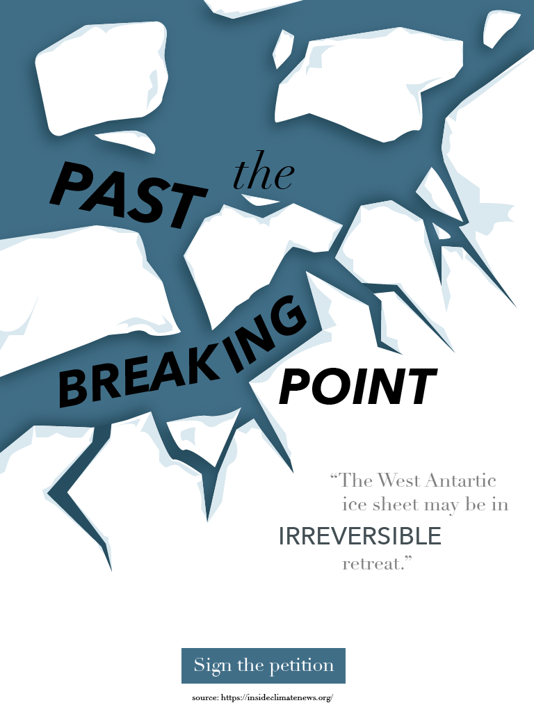
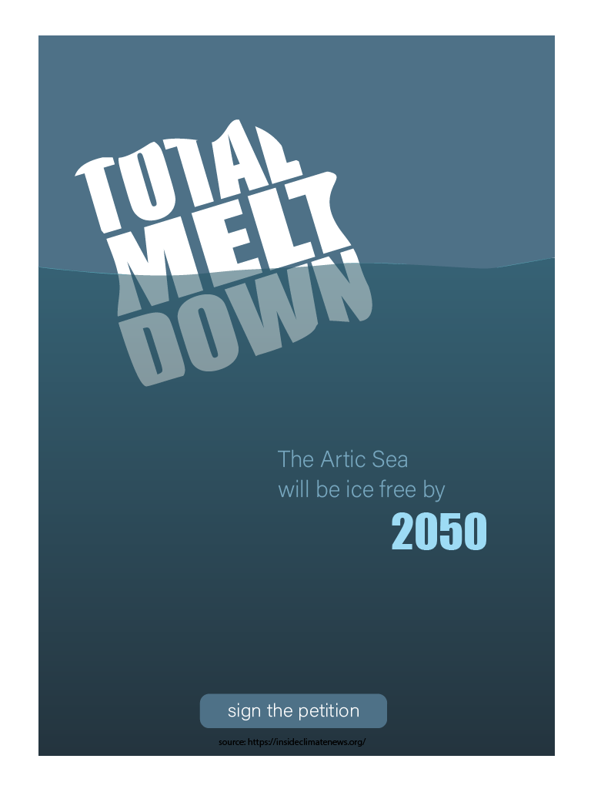
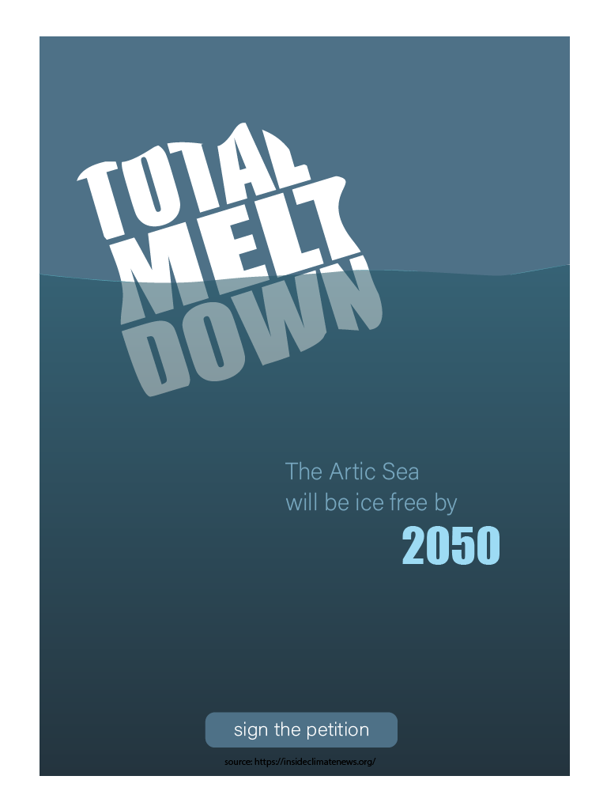
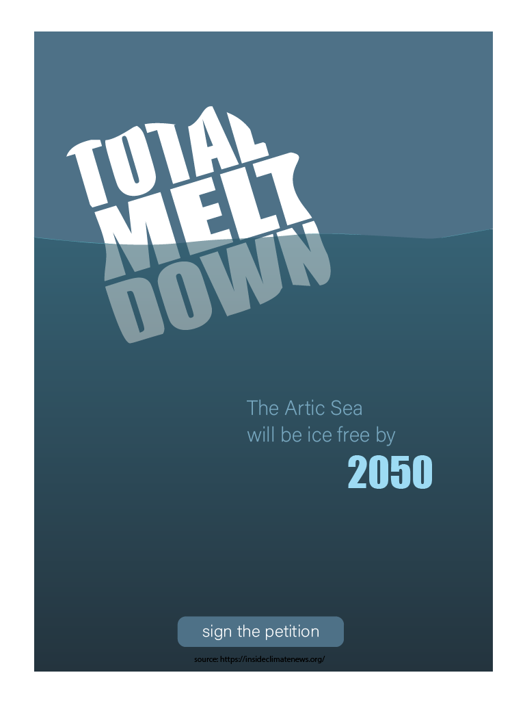

Social Cause Posters

 


Overview
This project required me to use a combination of graphics and typography to create a poster raising awareness about a social issue. I picked an enviromental issue, specfically the melting of the ice caps caused by global warming. All three posters had to be distinctly different from one another.
Tools and Technologies
This project was created using Adobe Illustrator.
Challenges
Each poster had to be distinctly different while covering the same topic